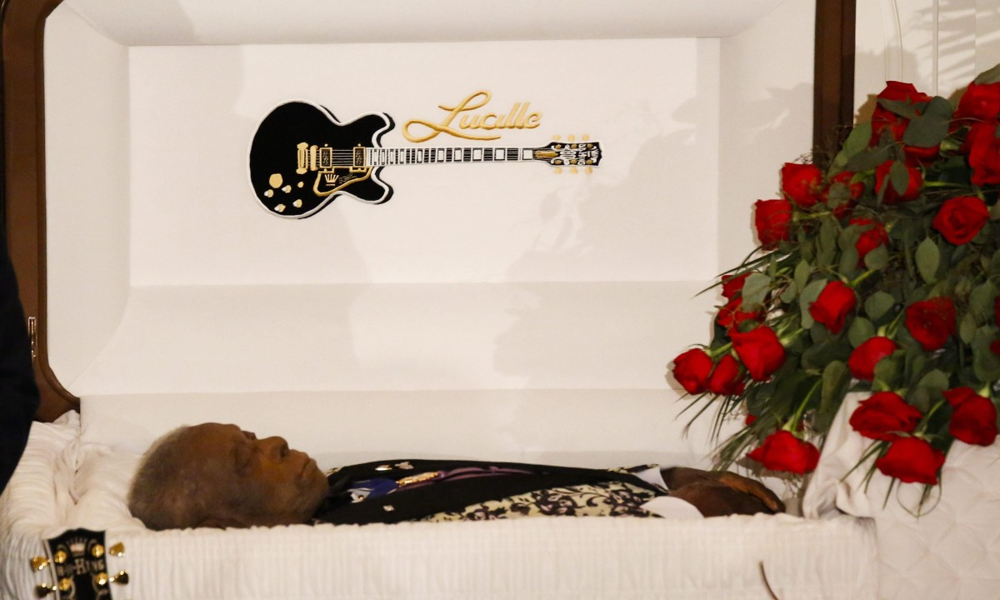

Riley Ben King, mais conhecido como B. B. King, (Itta Bena, 16 de setembro de 1925 – Las Vegas, 14 de maio de 2015) foi um guitarrista de blues, compositor e cantor estadunidense. O "B. B." em seu nome significa Blues Boy, seu pseudônimo como moderador na rádio W. Foi considerado, ao lado de Eric Clapton e Jimi Hendrix, um dos melhores guitarristas do mundo pela revista norte-americana Rolling Stone. Ao longo da sua carreira, B.B. King foi distinguido com 15 prémios Grammy, tendo sido o criador de um estilo musical único e que faria dele um dos músicos mais respeitados e influentes de blues, tendo ganho o epíteto de Rei dos Blues. Era apreciado por seus solos, nos quais, ao contrário de muitos guitarristas, preferia usar poucas notas. Certa vez, B.B. King teria dito: "posso fazer uma nota valer por mil".
B.B. King (1925-2015), nome artístico de Riley Bem King, nasceu em Itta Bena, nos arredores de Indianola, cidade do estado americano de Mississipi, Estados Unidos, no dia 16 de setembro de 1925. Com nove anos sentiu na pele a miséria, quando colhia algodão para se sustentar. Conheceu de perto o racismo, quando serviu o Exército durante a Segunda Guerra Mundial e descobriu que os soldados, seus compatriotas, preferiam sentar-se ao lado de um prisioneiro alemão a ficar ao lado dele. B.B. King criou um estilo próprio e dizia que conseguia fazer uma nota valer por mil. Seu estilo influenciou guitarristas como Eric Clapton e Stevie Ray Vaughan e George Harrison. Foi considerado para o blues o mesmo que Louis Armstrong representou para o jazz e Ray Charles para a soul music.

veja mais detalhes abaixo.
click aquiEm 15 de dezembro de 2006 o Presidente americano George W Bush premiou King com a Medalha Presidencial da Liberdade. Em 2004, ele foi premiado como Ph.D honorário da Universidade de Mississippi e o Conservatório Sueco Real lhe premiou com o Prêmio de Música Popular, por suas contribuições significantes para o blues. King foi agraciado com a Medalha Nacional de Artes, em 1990, nos Estados Unidos. Ganhador de diversos Grammys de 1971 a 2006. Foi considerado o 6° melhor guitarrista de todos os tempos pela revista norte-americana
No início de abril, B.B. King foi internado no hospital depois de sofrer de desidratação causada pelo diabetes tipo 2, doença com a qual convivia há mais de vinte anos.Estava com uma turnê marcada para 2015, mas teve que desmarcar os shows por causa da doença. Durante uma apresentação em Chicago em outubro, o músico passou mal no palco devido a desidratação e esgotamento. Ainda faltavam oito apresentações para terminar a temporada. King morreu em 14 de maio de 2015, enquanto dormia, aos 89 anos.O médico do músico, Darin Brimhall, e o legista John Fudenberg declararam que o termo técnico para a causa da morte é demência vascular.Brimhall disse que os AVCs de B.B. King resultaram da redução do fluxo sanguíneo em consequência de diabetes crônica. Também houve a suspeita de que B.B. King tivesse sido envenenado por seu agente. Duas de suas filhas fizeram a acusação, pedindo uma investigação formal.Nada porém ficou comprovado, tendo a autópsia concluído que a morte ficou a dever-se a causas naturais e confirmou que B.B. King sofria de diabetes, da doença de Alzheimer e problemas cardíacos.
King of the Blues (1960)
1.My Kind of Blues (1960)
2.Live at the Regal (Live, 1965)
3.Lucille (B.B. King álbum)|Lucille (1968)
4.Live and Well (1969)
5.Completely Well (1969)
6.Indianola Mississippi Seeds (1970)
7.B.B. King in London (1971)
8.Live in Cook County Jail (1971)
9.Live in Africa (1974)
10.Lucille Talks Back (1975)
11.Midnight Believer (1978)
12.Live "Now Appearing" at Ole Miss (1980)
13.There Must Be a Better World Somewhere (1981)
14.Love Me Tender (B.B. King álbum)|Love Me Tender(1982)
15.Why I Sing the Blues (1983)
16.B.B. King and Sons Live (B.B. King álbum)|B.B. King and Sons Live (Live, 1990)
17.Live at San Quentin (1991)
18.Live at the Apollo (B.B. King álbum)|Live at the Apollo (Live, 1991)
19.There is Always One More Time (1991)
2o.Deuces Wild (álbum)|Deuces Wild (1997)
21.Riding with the King (B.B. King and Eric Clapton álbum)|Riding with the King (2000)
22.Reflections (B.B. King álbum)|Reflections (2003)
23.The Ultimate Collection (B.B. King álbum)|The Ultimate Collection (2005)
24.80 (album)|B.B. King & Friends: 80 (2005)
25.One Kind Favor (2008)